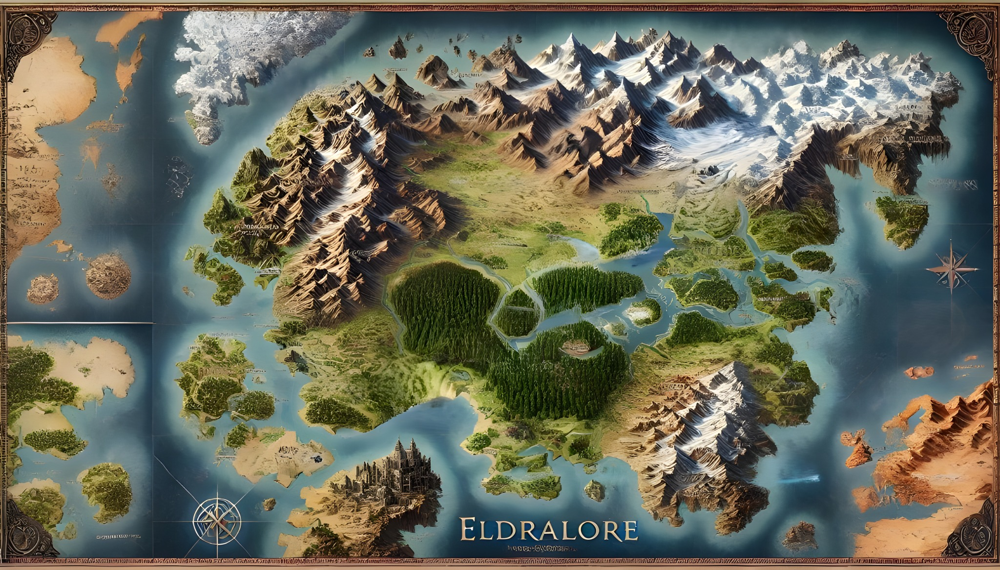

Atlas de Eldralore
Minimizar
Camada
Superfície
Subterrâneo
Aéreo
Subaquática
Abismo
Raça
Todas
Humanos
Elfos
Anões
Vampiros
Orcs
Nagas
Centauros
Dragões
Demônios
Feéricos
Gigantes
Gnomos
Mortos-vivos
Anjos
Tipo
Todos
Cidades Principais
Assentamentos
Fortalezas
Masmorras
Guilda
Templos
Busca
Debug (x,y)
Régua (40km/dia)
−
100%
+
Reset
Overlay climático
Ocultar sem imagem
Calendário
Dia 1 • Mês 1 • Ano 1
+1 dia
D
M
A
Aplicar
Lock
Modo GM
Sair
Editor
NPCs importantes
Expandir toda info
Controles de calendário e NPCs importantes exigem Modo GM.

✕
✕
Sublocais
Interações
Local selecionado
Selecione um sublocal para ver detalhes e comerciantes.
Inventário do comerciante
Selecione um comerciante.
✕
Debug
Coordenadas percentuais (x,y) no mapa
✕
Minimizar
Editor GM
Crie novos pins (sem alterar os existentes) e aplique conversões por zona racial. Alterações são salvas no navegador (GM).
Criar novo pin
Tipo
Cidade Principal
Assentamento
Fortaleza
Masmorra
Templo
Guilda
Passagem Subterrânea
Nome
X (%)
Y (%)
Capturar no mapa
Camada
Superfície
Subterrâneo
Aéreo
Subaquática
Abismo
Território/Raça
(auto por polígono)
Humanos
Elfos
Anões
Vampiros
Orcs
Nagas
Centauros
Dragões
Demônios
Feéricos
Gigantes
Gnomos
Mortos-vivos
Anjos
cityId (somente para Cidade Principal)
Mostrar nome sempre (opcional)
Criar pin
Exportar JSON
Dica: use Capturar no mapa, defina Nome e Tipo, e clique em Criar pin.
Configurar cidade principal (pin selecionado)
Selecione um pin no mapa (com o Editor aberto) para configurar a cidade.
Selecionar pin no mapa
Marcar como Cidade Principal
Marcar como Assentamento
Tabernas
Pousadas
Ferreiros
Alfaiatarias
Alquimias
Materiais diversos
Mercadores por local (além do fixo)
Aplicar configuração na cidade
Isso cria/atualiza a entrada da cidade (City View) e salva no navegador (GM). Depois use Exportar JSON para me enviar.
Conversões por zona (opcional)
Zona (polígono racial)
Quantidade (0 = tudo na zona)
Assent. → Cidade Principal
Cidade Principal → Assent.
Estas conversões não apagam pins; apenas alteram o tipo via override GM (salvo no navegador).